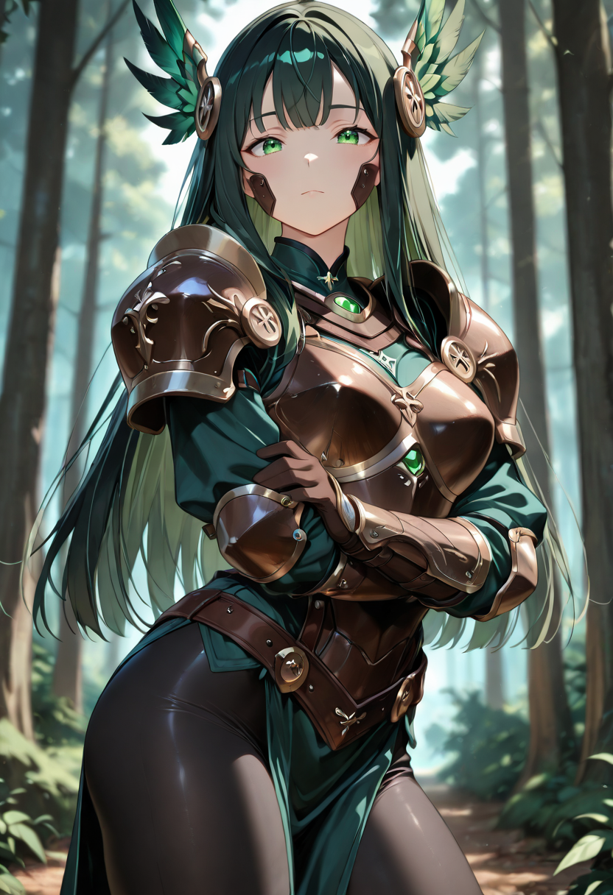
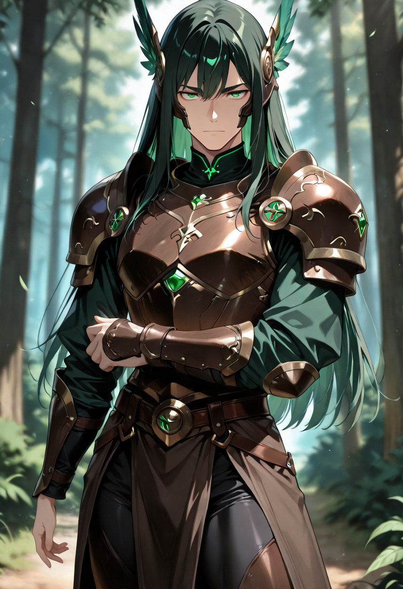
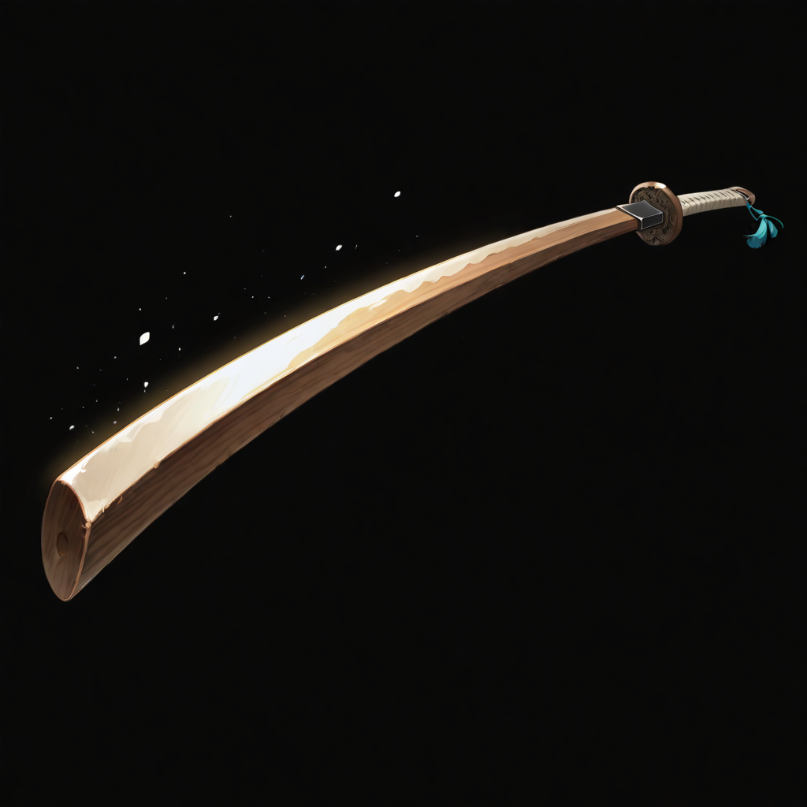
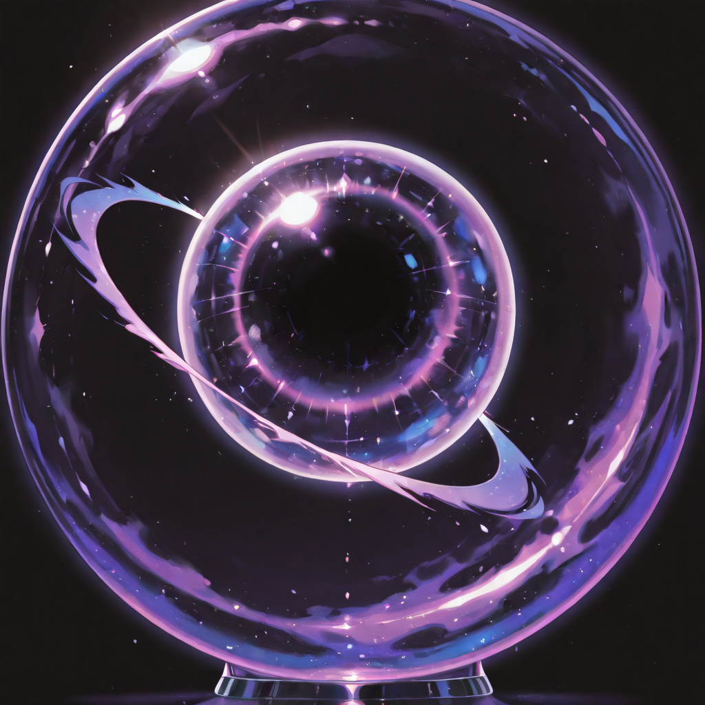
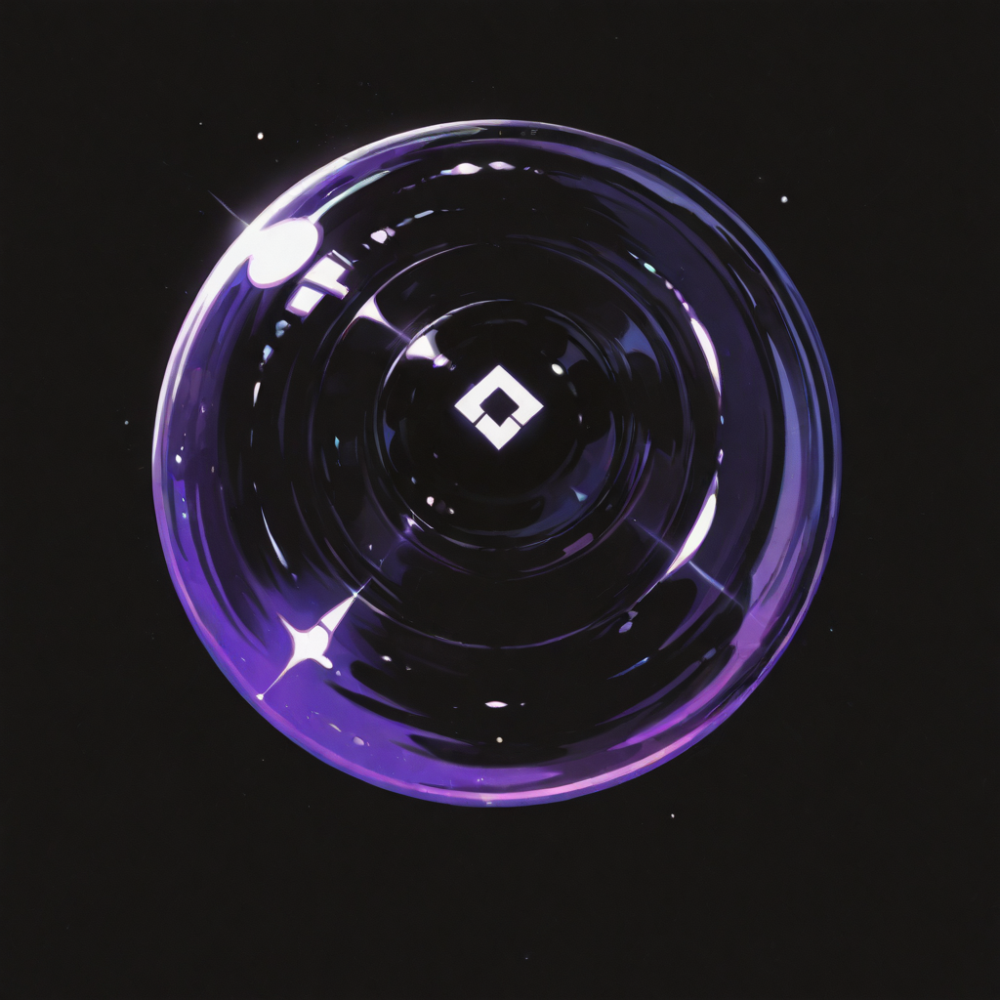
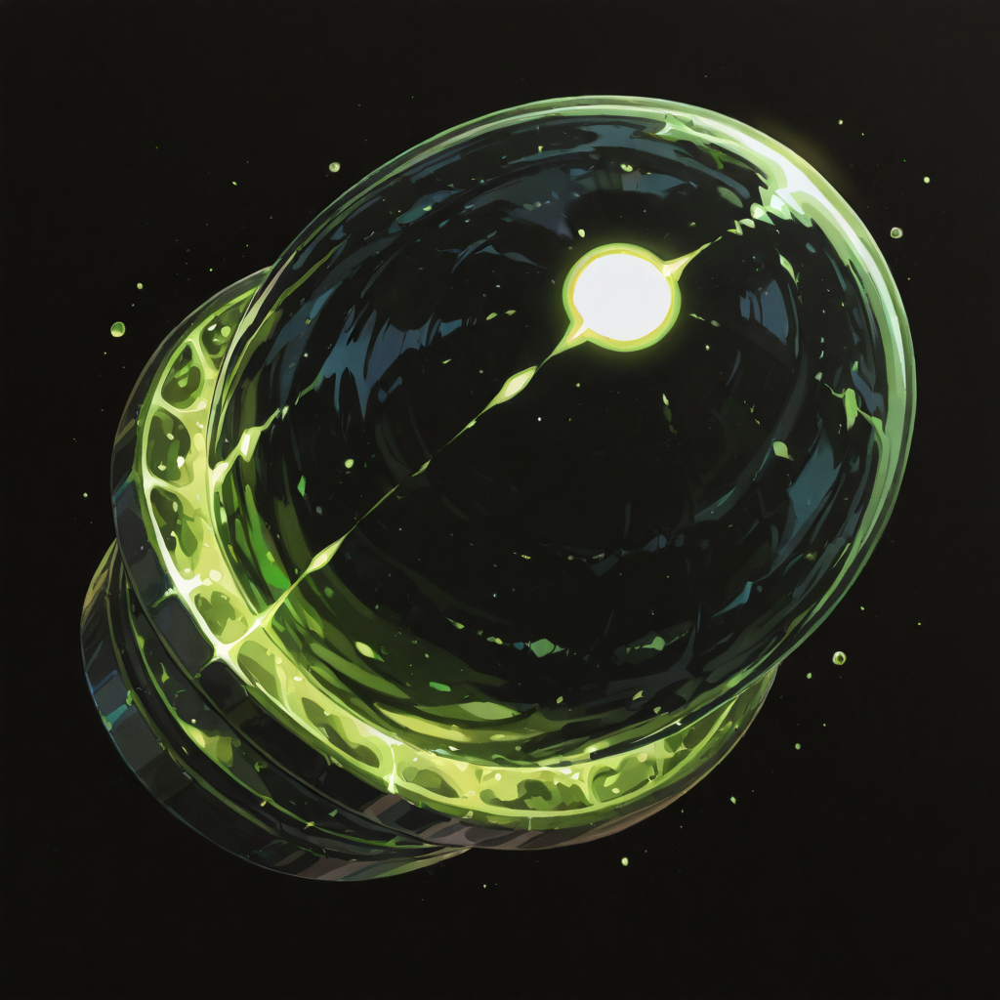
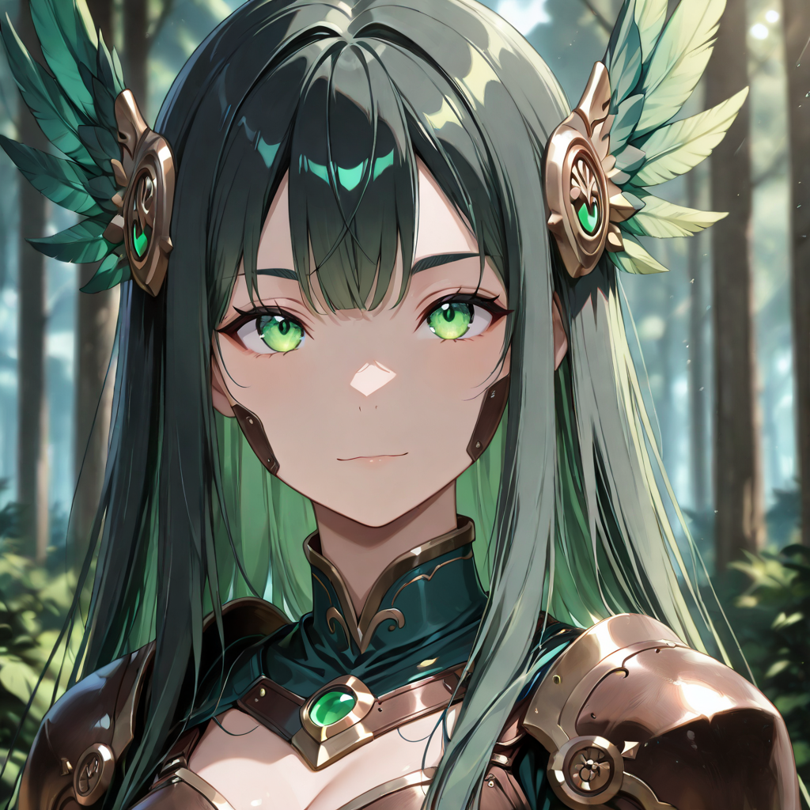
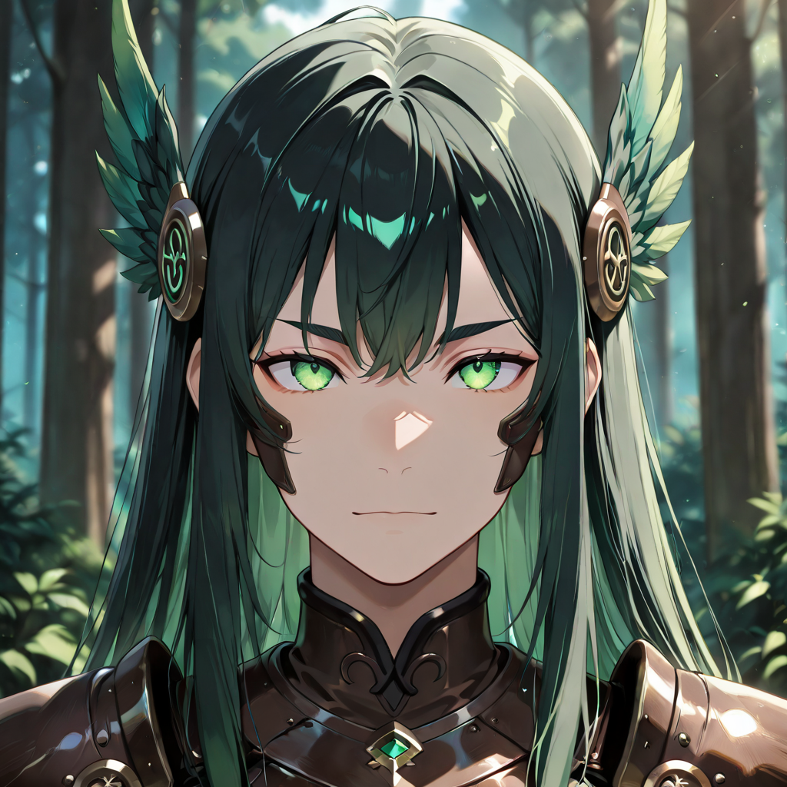

Origin Unknown
No one knows where the Patrols come from. Even other Arborei, who share the language of root and etheric vibration, cannot identify which battlefield they remember, which war etched itself into their bark. They arrived in the Empire already formed, already commanding. Malicott did not create them , she recognized them.
What distinguishes a Patrol from other officers in the Empire is a quality that cannot be taught: the ability to be present. While other commanders plan from the rear, Patrols stand in the thick of the formation, their feet planted like ancient roots, their eyes tracking every movement on the field. They speak little. When they do speak, everyone listens , because they speak only what is necessary, and what is necessary is always true.
Among the undead warriors of the Empire, the Patrols hold a special authority. The Arborei feel an instinctive solidarity with them, a resonance they describe as "hearing the same memory." In battle, when a Patrol raises a fist in the signal to attack, the dead move before the living can register the command.
Tactical Data

Attack
Base Attack
Ethereal Coordination
Active
Undeath Resonance
Passive
Emerald Assault
UltimateGallery

